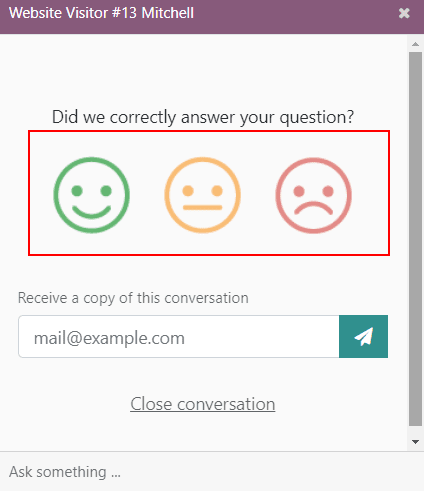
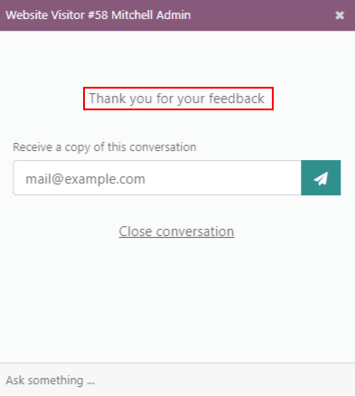
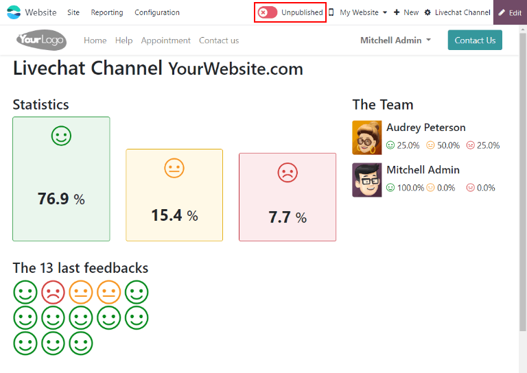
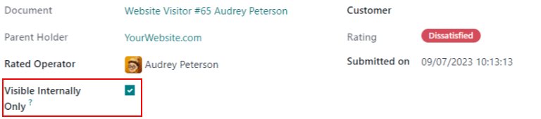

Calificaciones¶
Al final de una conversación de Chat en vivo, los clientes tienen la oportunidad de evaluar la calidad del soporte que recibieron del operador de esta aplicación. Los clientes proporcionan calificaciones tan pronto como cierran la conversación, esto permite que los operadores reciban retroalimentación inmediata sobre su desempeño. Además, los clientes también tienen la oportunidad de compartir cualquier comentario final antes de salir de la ventana de chat.
Calificar conversaciones del Chat en vivo¶
Los clientes pueden finalizar una conversación de Chat en vivo si hacen clic en la X que se encuentra ubicada en la esquina superior derecha de la ventana de chat. Después, se les solicita que seleccionen un icono que coincida con su nivel de satisfacción, cada uno representa una de las siguientes calificaciones:

Satisfecho - carita feliz verde
Neutral - carita neutral amarilla
Inconforme - carita enojada roja
Nota
Cuando los clientes terminan una conversación, el campo marcado como Recibir una copia de esta conversación aparece debajo de los iconos de calificación. Los clientes pueden escribir su correo antes o después de enviar una calificación.
Si el cliente selecciona el icono relacionado a satisfecho (carita feliz), recibirán un mensaje de agradecimiento y un enlace para cerrar la conversación.
Si el cliente selecciona el icono relacionado a neutral (carita amarilla) o a inconforme (carita triste), aparecerá un cuadro de texto. En esa sección, los clientes pueden agregar comentarios para explicar el motivo de su calificación. El operador de chat en vivo recibirá este mensaje junto con el icono de calificación.
Publicar las calificaciones de los clientes¶
Para publicar las calificaciones de un canal en el sitio web, primero diríjase al registro de un canal de chat en vivo. Vaya a la aplicación y haga clic en la tarjeta kanban de ese equipo, después haga clic en el botón inteligente Ir al sitio web. Esta acción abrirá la página de estadísticas del canal de chat en vivo.
En la esquina superior derecha de la página, haga clic en el interruptor Sin publicar, este cambiará del estado anterior a Publicado.
Nota
Las notas que el cliente envió con su calificación no se publicarán en el sitio web, son para uso interno. En el sitio web solo aparece información general estadística sobre el desempeño de los operadores del canal.
Agregar una página de calificaciones al sitio¶
Una vez que se ha publicado la página de calificaciones, se tiene que agregar manualmente al sitio web. Para hacerlo, vaya al tablero principal de Odoo y abra la aplicación Sitio web y luego :menuselection: Sitio –> Contenido –> Páginas`, y haga clic en Nuevo.
Esto abrirá una ventana emergente de Nueva página. En el campo Titulo de la página, escriba livechat. Esto será como la URL para la página web publicada.
Importante
La URL debe tener el nombre de livechat para que la base de datos lo reconozca y conecte la página de calificaciones. Después de que se publico la página, puede cambiar el título de la página después en el Menú de editor.
Haga clic en Crear y se abrirá una página web recién creada. El Editor de la página web aparecerá en el panel derecho.
La página mostrará los nombres de los Canales de chat en vivo cuyas páginas de calificación se han publicado. Del lado izquierdo del nombre del canal aparecerá un icono de una burbuja de diálogo, el cual podrán utilizar los usuarios para ir a la página de calificaciones para sus respectivos canales.
Haga los cambio o adiciones que desee a la página y luego haga clic en Guardar ubicado en la esquina superior derecha del editor de la página. El panel lateral de editor se cerrará y la página web permanecerá en la pantalla.
Para publicar la página web de livechat, regrese a la lista de páginas web en . Haga clic en la casilla ubicada del lado izquierdo de livechat en la lista de páginas para seleccionar la página y resaltar la línea. Luego, haga clic en la casilla debajo de la columna llamada Publicado. Este campo con la casilla está resaltado en color blanco. Haga clic en la casilla una segunda vez para activar la casilla Publicado. La página web ya estará publicada.

Una vez que la página se añadió al sitio, las calificaciones están listas para publicarse de manera predeterminada. Sin embargo, las calificaciones manuales se pueden seleccionar manualmente para que el público no las vea. La calificación aún estará incluida en los reportes internos y los equipos internos todavía la podrá ver. Sin embargo, los visitantes del sitio web público y los usuarios del portal no tendrán acceso a ella.
Consulte la página Ocultar calificaciones individuales para obtener más información.
Reporte de calificaciones del cliente¶
El reporte Calificaciones de los clientes () muestra un resumen de las calificaciones recibidas en los tickets de soporte individuales, así como cualquier comentario adicional enviado junto a la calificación.

El reporte tiene la vista kanban de forma predeterminada, cada calificación está representada por una tarjeta diferente. Para cambiar de vista, haga clic en uno de los iconos de la esquina superior derecha de la pantalla. El reporte está disponible en vista de lista, tabla dinámica y gráfico.
Haz clic en una calificación individual para consultar información adicional sobre la conversación y la calificación.
Ocultar calificaciones individuales¶
Las calificaciones están listas para publicarse de manera predeterminada. Sin embargo, las calificaciones manuales se pueden seleccionar manualmente para que el público no las vea. La calificación aún estará incluida en los reportes internos y los equipos internos todavía la podrá ver. Sin embargo, los visitantes del sitio web público y los usuarios del portal no tendrán acceso a ella.
Si desea ocultar una calificación, vaya a la aplicación y haga clic en la tarjeta kanban de la calificación que desea ocultar. En la página de detalles de la calificación individual, marque la casilla Visible solo de forma interna.
Ver también